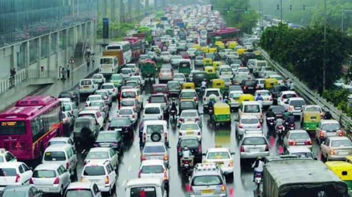
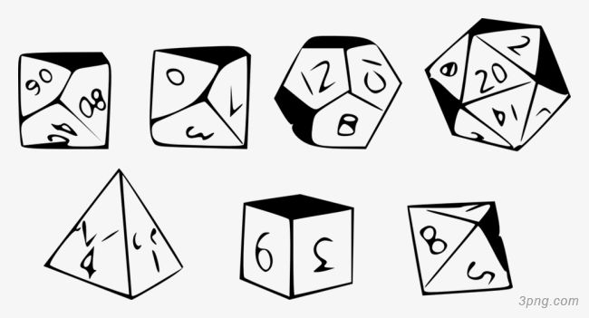
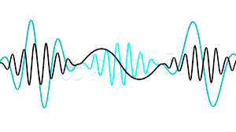
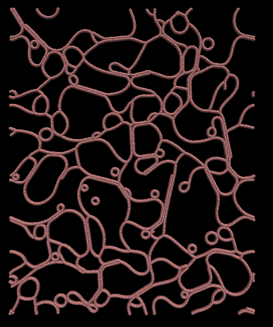
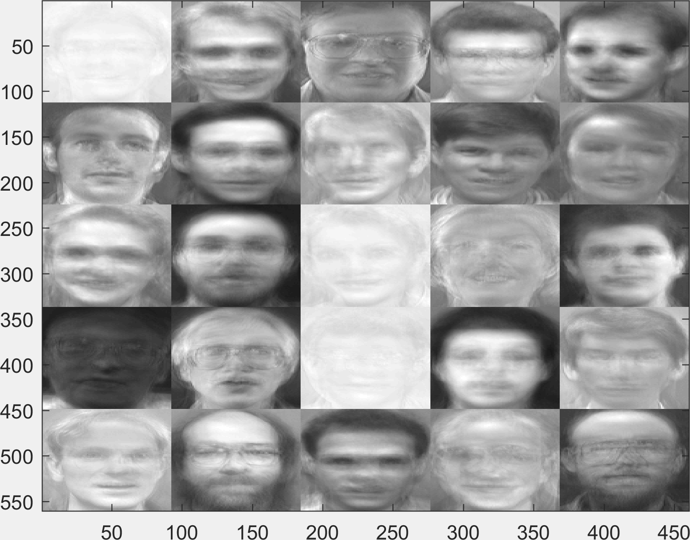
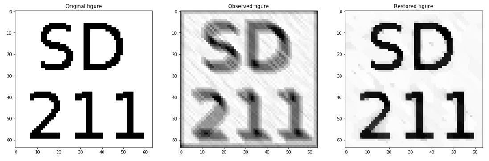
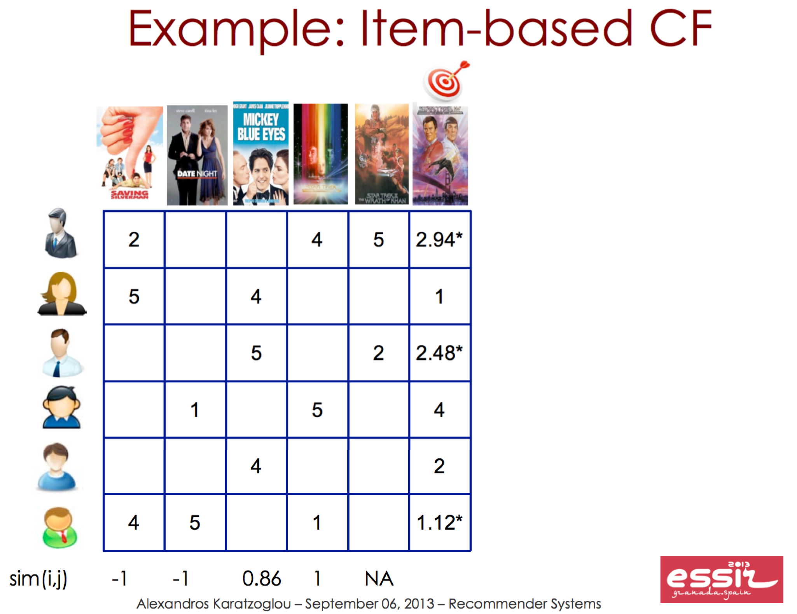
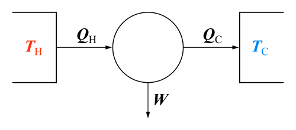

I am a student with Data Science and Physics background.
Now I am
pursuing "diplôme d'ingénieur" at Télécom ParisTech, equivalent to Master of Science in Engineering.
My interest lies on AI, including Reinforcement Learning, Decision Process and other topics.
I am expected to graduate in October, after my internship at Inria Sophia Antipolis. Mu current work is
big data analysis of traffic time series collected by detectors on highways in Marseille region. My main task
is to read papers and apply the analysis methods (time series method or machine learning) to our data set in order to
find out the patterns is the series and do traffic prediction.
I am looking for a position of AI researcher or Data Scientist in
R&D departments. I am passionate for applying AI technologies to real problems and change the way we work and live.
I believe my ability of study and skills will bring you value.
If you have such positions and are looking for such a person, don't hesitate to contact me :)
Skills
- Python, R, Java, C++, HTML, Spark, computer cluster...
- Interdisciplinary thinking
- Learn skills and knowledge quickly
- Humor
- English, French, Chinese
Professional Experience
I learned physics for 4 years in Nanjing University, China. I mainly worked on computational physics.
Driven by curiosity of AI and desire to handle more powerful tools and broaden my mind, I
began studying Machine Learning at Télécom ParisTech and did many works individually or in group.
Currently I am doing an internship at Inria Sophia Antipolis, using motif discovery methods and co-clustering method
to find out the similarity and difference of data and improve the PDE model.

Big Data Analysis and Traffic Models
We transfered the 20G raw data collected by the detectors along highways in Marseille region into time series
of speed and flow. Then I applied the motif discovery method (by UCR) to find out patterns. I also used
the co-clustering method (by Charles Bouveyron, Inria) to get different clusters of date and location,
and calculate the corresponding parameters for LWR traffic model. Now we are doing the simulation discretized
by the Godunov Scheme. We expect to have a more precise model than traditional ones, which can give a better prediction
of traffic conditions in future.

Optimization for Monte Carlo Methods
Try to find a better sampler in order to solve the Curse of Dimensionality in
Monte-Carlo methods.
I derived an Average Adaptive Importance Sampling Algorithm and verified its better convergence in Bayesian Logit Model through simulations and theoretical calculations.

Acoustic Scene Classification
Classify the scenes in which the acoustic file had been recorded
I put forward a new preprocessing and training method.
By analyzing several acoustic files, I found some could be recognized by a small part of sound such as people talking, while others were decided by continuous sound such as sea waves. Thus, I thought the features should be separated into percussive and harmonic parts and be trained separately. My method turned out to increase the performance of various trainers. I was greatly encouraged by this success because we can have particular applications rooting in an explicable intuitional idea.

Simulation of Dynamic Self-Assembly of Dipolar Colloids in Alternating Electric Field
Inspired by the self-assembly of molecules under magnetic fields, I simulated the two-dimensional system of dipolar colloids under electric fields. In a constant temperature solution, my model considered electric force from an external field, Van der Waals force, the electric force between dipole balls, and soft ball collision. My work began with understanding the code examples of LAMMPS and relating them to physics. Based on the open sources I designed my system and through SSH I manipulated our computer cluster to process the simulations in bulk. I worked out a phase diagram which shows the phase transition between static networks, rings and lines structures, and disorder according to the frequency of electric field and colloids density. I also discovered a semi-static structure which potentially offered a new type of material.

Gender Classification through Facial Recognization
To tell the sex of the person in the photos through statistical learning.
NMF was applied to extract the features of a face, such as nose and eyes.
Then the class could be given through the values of these components.

Image Restoration
To restore a picture with noise and fuzzy. The relation of adjacent pixels were described in two matrices a priori.
Used ADMM algorithm to solve the constrained optimization problem.

Recommendation System
Based on the data of scores of movies given by the customers, I decompose the
sparse data matrix where each component accords to the score of a film given by a user, into two
matrices to extract the features of a film. Then the movies predicted to have high score
would be recommended to a particular user.

Topic Classification
I turned text files into Tfidf vectors and did preprocessing such as tokenizing the words and
ignoring the common words. Then I applied various trainers to do supervised learning and to give prediction.

A Phenomenological Model in Heat Engine
This work began with the disagreement of Carnot’s law which we were expected to verify in the practical course and the outcome of the experiment. In this experiment, we used the heat engine where air transferred quickly between high and low temperature zones and did work through a piston. Carnot’s Rule had a poor linear relation because the process could not be inversed. We made a model to describe this process whereby the air only absorbed heat from the high temperature zone. Then, using Newton’s law of cooling we derived a linear relation between the inverse of work in one cycle and the velocity-temperature difference ratio. Through doing experiments under different temperatures and changing the work output by fractional torques, we verified the relationship.
Extra Curricular Activities
Practical Training: Study on the Development of Chinese Science Fiction
Interviewer & Writer
Our team interviewed 10 organizations and famous authors all over China.
Volunteer in Wu Chien-Shiung Library, Nanjing
Organized the books to prepare the library for reopening
College-wide Academic Club ‘Little Ant’, Nanjing University
Establisher
Launched topics every week, held interdisciplinary discussions
Volunteer in Soong Ching-ling Memorial Residence, Shanghai
Tour guide
Investigation of Water Quality of Chuntang River, Shanghai
Leader of the team
Applied for the fund of Shangri-la Institute for Sustainable Communities, studied the PH value, oxygen content and other characteristics, did statistical analysis of the microorganisms